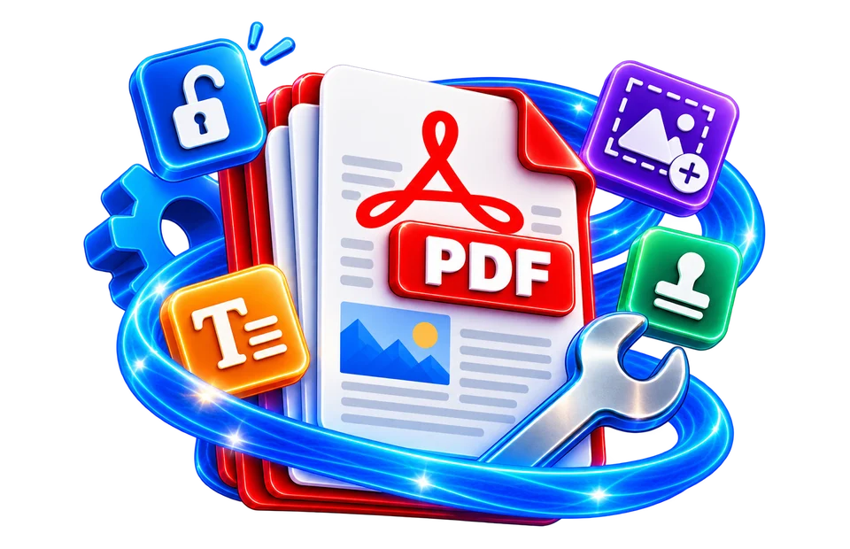

Open the PDF requiring a visible mark
Add a DRAFT label to a sample document and check that the content underneath remains readable.
Add a text watermark to PDF pages.
A watermarked PDF places visible marks over its content.

Add a DRAFT label to a sample document and check that the content underneath remains readable.
Place a draft or confidentiality label across PDF pages.
Watermarks can overlap page content; preview before export.
Add a DRAFT label to a sample document and check that the content underneath remains readable.
A diagonal DRAFT stamp should be visible without hiding totals or signatures. Avoid excessive opacity and check both pale and dark page backgrounds.
Use the real tool above to verify the result. The example illustrates the workflow, not a guaranteed outcome.
A diagonal DRAFT stamp should be visible without hiding totals or signatures. Avoid excessive opacity and check both pale and dark page backgrounds.
A visible watermark discourages casual reuse but is not a technical barrier to copying or alteration. Keep an unmarked archival original.

Add a DRAFT label to a sample document and check that the content underneath remains readable.
A diagonal DRAFT stamp should be visible without hiding totals or signatures. Avoid excessive opacity and check both pale and dark page backgrounds.
PDF watermarking can place text such as "DRAFT", "CONFIDENTIAL" or a review code over one or more pages. The goal is usually to signal document status or origin, not to encrypt the file. A visible CONFIDENTIAL mark does not prevent someone with access from copying the content. For a proposal under review, an angled low-opacity DRAFT label can reduce accidental use of the unfinished version, but it must not cover essential numbers, signatures or legal terms. Choose opacity and placement by examining typical pages, not only a blank preview.
Different page sizes complicate consistent positioning. A watermark centered on an A4 letter may appear too small on an A3 drawing or clip on a landscape page if fixed coordinates are used. If the interface provides font size, angle or position controls, verify the effect on portrait and landscape examples before processing the whole document. A watermark drawn as text may require embedded or supported fonts for Hindi and other scripts. The download should be tested for missing glyphs and incorrect text direction.
An added PDF watermark may be a text/vector overlay, a flattened image or part of a new rendered page depending on implementation. A vector overlay can stay sharp when zoomed, while a fully rasterized page may lose text search and form behavior. Neither technique makes the mark impossible to remove by someone with suitable PDF editing tools. If you need authentic document signing or access control, use signed-PDF and encryption workflows rather than treating a watermark as a security feature.
For a client preview, use a document-level watermark that leaves diagrams and tables readable. If a page is scanned, placing a light grey word directly over dark scan text may make the overlay disappear or obscure the information. Check a text-heavy page, a graphic-heavy page and the first/last pages. A PDF watermark added after page rearrangement will usually match the final order better than one added before multiple structural changes.
After export, reopen the PDF and confirm that the watermark appears on the intended pages, with correct wording and orientation. Search and select original text where preservation matters, and check whether annotations or links still function. Adding a watermark to someone else's document does not transfer copyright or authorship. Keep the unwatermarked original as a controlled source, and avoid distributing it when the mark is intended to distinguish an authorized review copy. If a digital signature existed, confirm whether the modification affected validity.
A large diagonal “DRAFT” mark may be immediately recognizable, but placing it over a signature, invoice amount or diagram label can make the document unusable. Compare the darkest and lightest pages in the source before choosing a watermark color and opacity. On a landscape drawing, the same font size can look much smaller relative to the page than on a portrait sheet. A transparent watermark that looks subtle on a white background may disappear over a pale photograph. After export, inspect representative pages at both screen and print scale. Watermarking labels copies; it does not encrypt the PDF or prevent someone from altering its content.
Marking every page of a draft contract with a pale diagonal “DRAFT” label can clarify that it is not the signed version. A watermark too dark can obscure signatures and small print, while one confined to the corner may be missed. Choose opacity and placement based on the document's actual content rather than using the same setting blindly. After export, inspect the busiest page, not just an empty-looking cover. A visible watermark is not encryption and does not prevent copying. If a document needs legally effective authenticity controls, consider secure signatures or access management in addition to visual marking.
Use a subtle placement and inspect several pages after export.
Use a subtle placement and inspect several pages after export.
No. Watermark text can be added by many editors and does not establish authorship or legal rights on its own.
No. Watermarks communicate status or attribution but are not access controls.
The added lettering may reduce legibility or obscure important data on crowded pages.